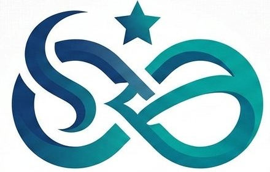
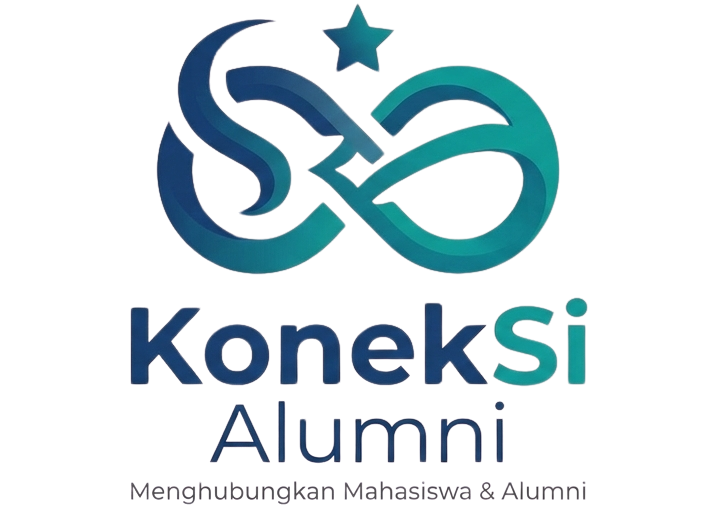
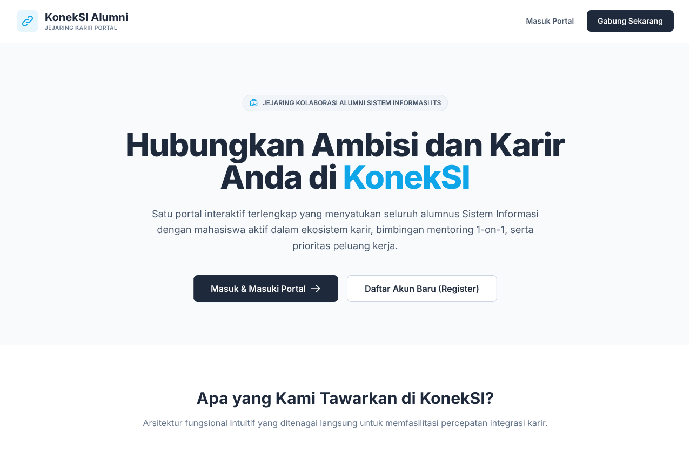
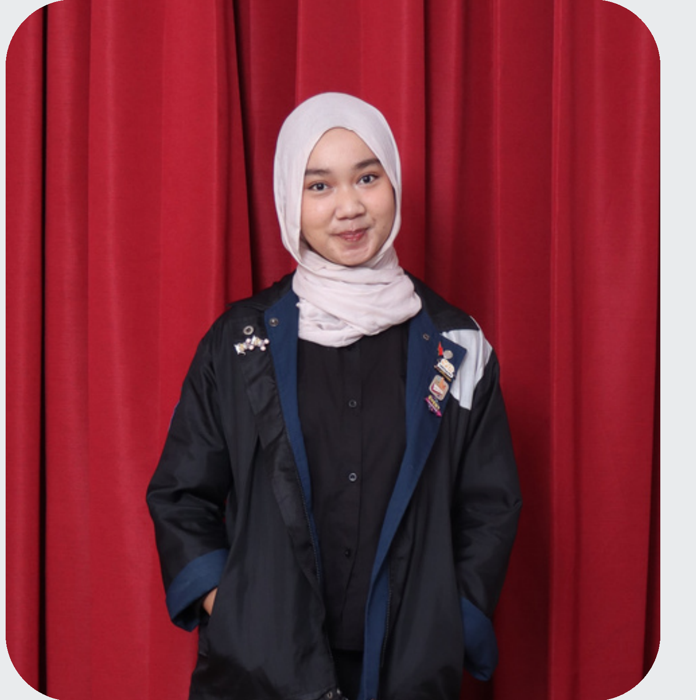
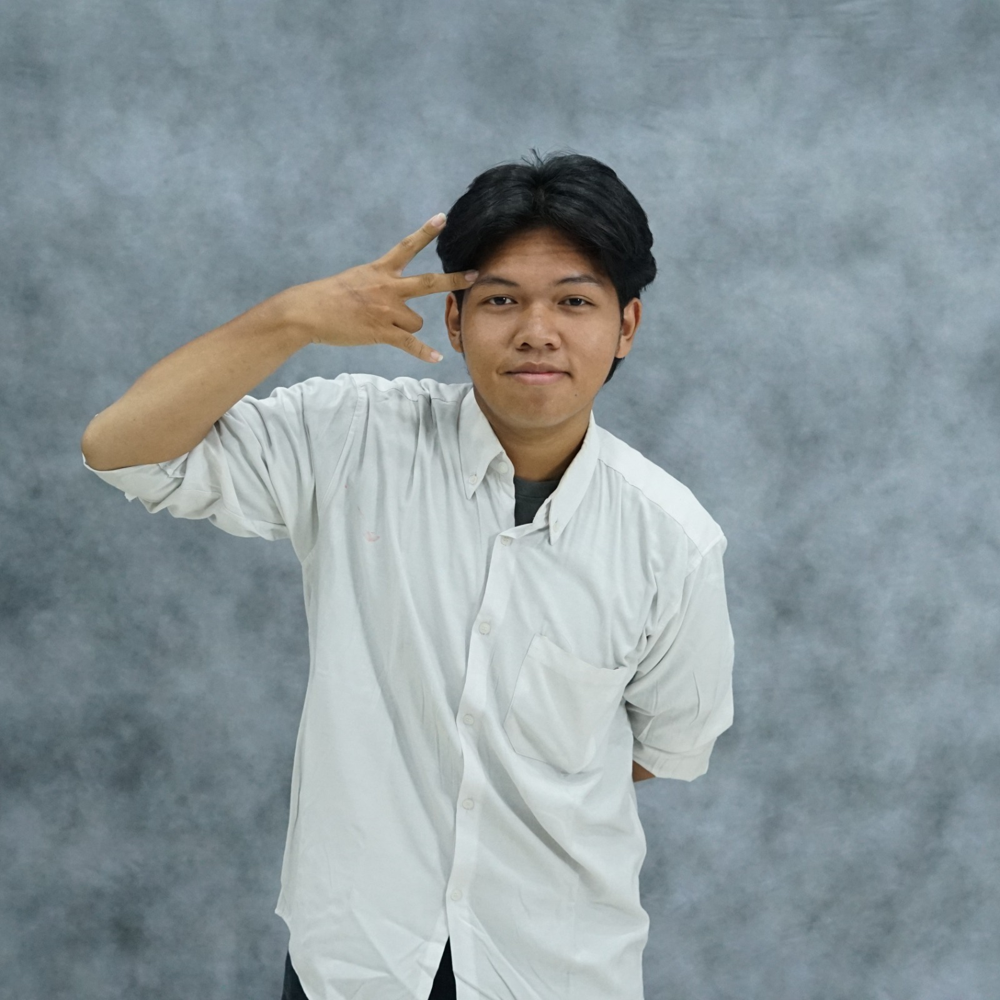
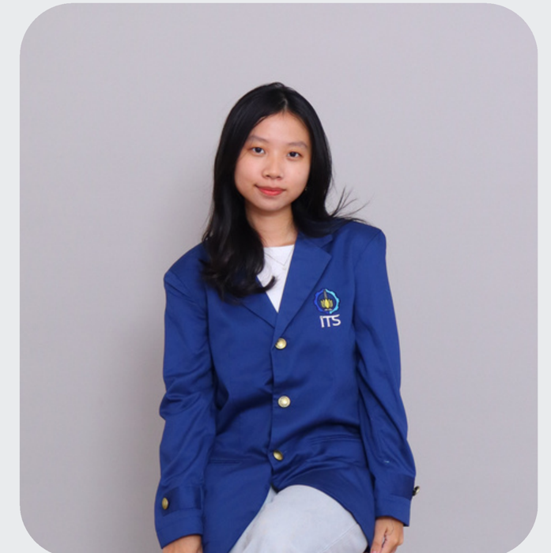

Talent Pool
Wadah personal branding bagi mahasiswa untuk unjuk gigi. Temukan profil mahasiswa lengkap dengan skill, portofolio, dan filter pencarian talenta.


KonekSI Alumni merupakan pengembangan platform website Alumni SI ITS yang berfungsi sebagai perantara alumni dari Sistem Informasi ITS kepada para mahasiswa aktif Sistem Informasi ITS. Platform ini menyediakan database Alumni, Lowongan kerja yang tersedia, berbagai macam rekam jejak alumni, hingga aktivitas yang dibawakan oleh Ikatan Mahasiswa Sistem Informasi atau IKASI.
KonekSI Alumni menghubungkan mahasiswa dan alumni Sistem Informasi ITS dalam satu platform: Direktori Alumni, Talent Pool, Mentoring Eksklusif, dan Sistem Referral Kerja yang terintegrasi dan mudah diakses kapan saja.
Wadah personal branding bagi mahasiswa untuk unjuk gigi. Temukan profil mahasiswa lengkap dengan skill, portofolio, dan filter pencarian talenta.
Fasilitas bimbingan karier secara berkelanjutan langsung dari ahlinya. Booking jadwal konsultasi privat dengan alumni, lengkap dengan integrasi tautan pertemuan.
Akses terintegrasi menuju peluang magang dan lowongan kerja tepercaya. Ajukan rekomendasi langsung ke alumni dan akses lowongan kerja secara transparan.
Akses terintegrasi menuju peluang magang dan lowongan kerja tepercaya. Ajukan rekomendasi langsung ke alumni dan akses lowongan kerja secara transparan.

Platform yang menghubungkan mahasiswa dan alumni Sistem Informasi ITS untuk membangun koneksi, mentoring, dan peluang karier dalam satu tempat.
Pelajari bagaimana KonekSI Alumni dirancang untuk menghubungkan mahasiswa dan alumni Sistem Informasi ITS melalui direktori alumni, mentoring, talent pool, dan referral kerja dalam satu platform terintegrasi.
Delapan tahapan berikut menunjukkan proses desain KonekSI Alumni dari identifikasi masalah hingga pengembangan prototype sebagai solusi untuk memperkuat koneksi antara mahasiswa dan alumni Sistem Informasi ITS.
Klik pada setiap tahapan di bawah ini untuk melihat detail laporan, prototipe, serta dokumen presentasi dari pengembangan platform KonekSI Alumni.
Tahap awal untuk mengidentifikasi masalah nyata yang dihadapi mahasiswa Sistem Informasi ITS dalam membangun relasi karier dengan alumni.
Merumuskan sudut pandang pengguna (Point of View) serta membuat pertanyaan "How Might We" untuk memicu ide-ide solusi kreatif.
Pembuatan video skenario konsep aplikasi untuk memvisualisasikan bagaimana KonekSI Alumni menyelesaikan masalah interaksi secara nyata.
Perancangan sketsa kasar (wireframe) antarmuka website untuk memetakan alur navigasi utama aplikasi dengan cepat.
Transformasi sketsa menjadi prototipe digital tingkat menengah (Medium Fidelity) untuk menguji fungsionalitas tata letak halaman.
Proses evaluasi bersama ahli/rekan sejawat menggunakan 10 prinsip Jakob Nielsen untuk menemukan dan memperbaiki celah kegunaan (usability flaws).
Tahap akhir pembuatan purwarupa interaktif yang sudah dilengkapi dengan komponen visual penuh, warna tema, tipografi, dan aset gambar asli.
Penyusunan materi publikasi akhir berupa poster promosi dan slide presentasi ringkas (pitching) untuk kebutuhan pameran proyek.
Lima mahasiswa Sistem Informasi ITS yang bekerja sama untuk merancang dan mengembangkan KonekSI Alumni sebagai platform yang mendukung koneksi, mentoring, dan pengembangan karir mahasiswa.



Temukan referensi karier terpercaya, perluas relasi profesional, dan persiapkan masa depanmu bersama ekosistem terintegrasi KonekSI Alumni.